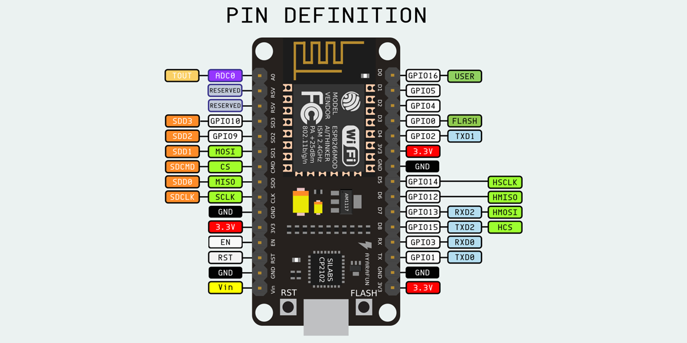
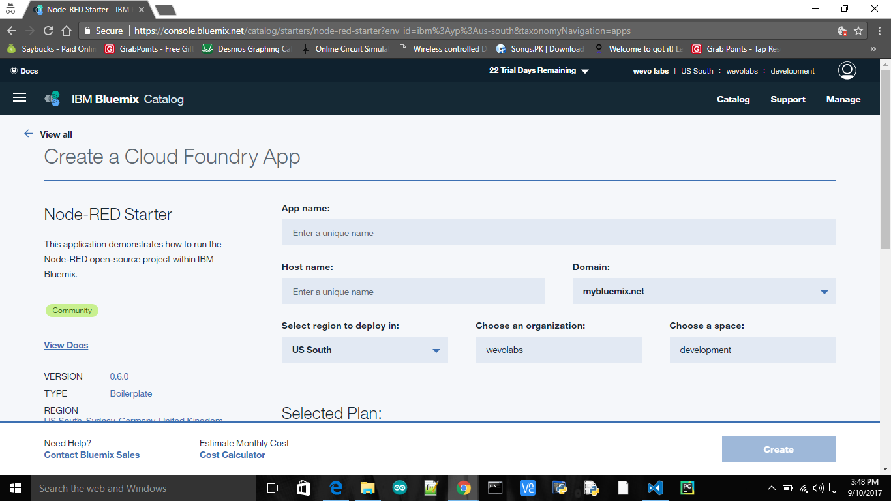
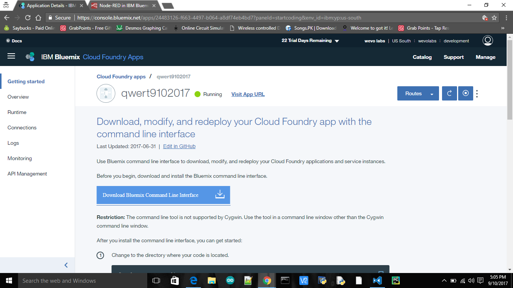
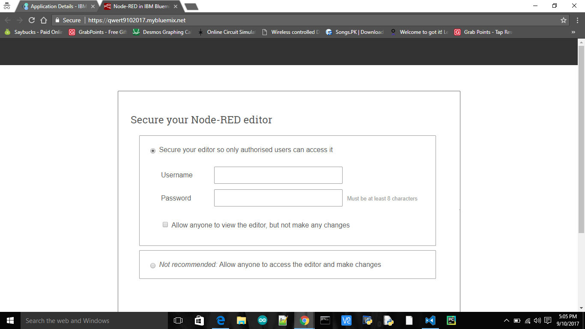
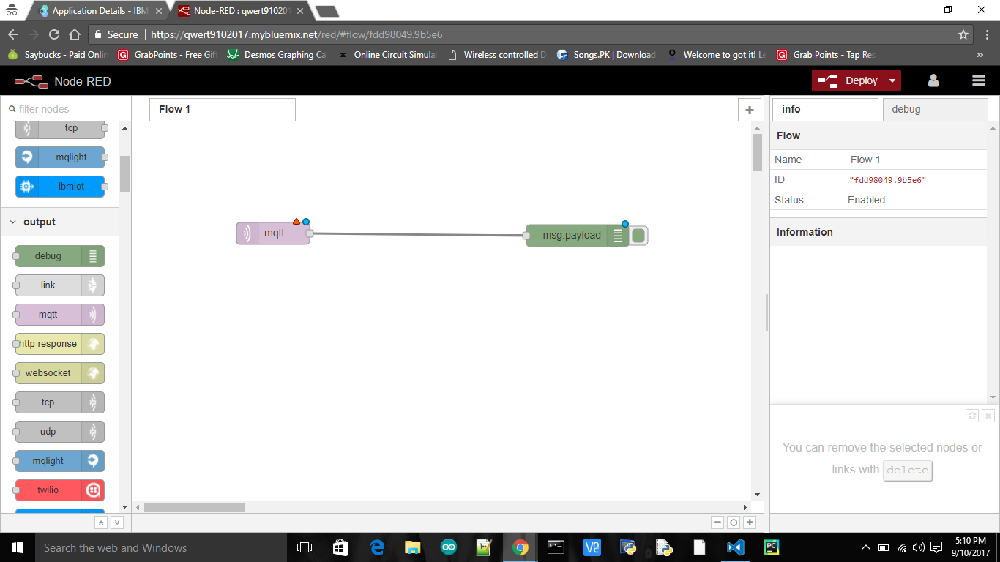
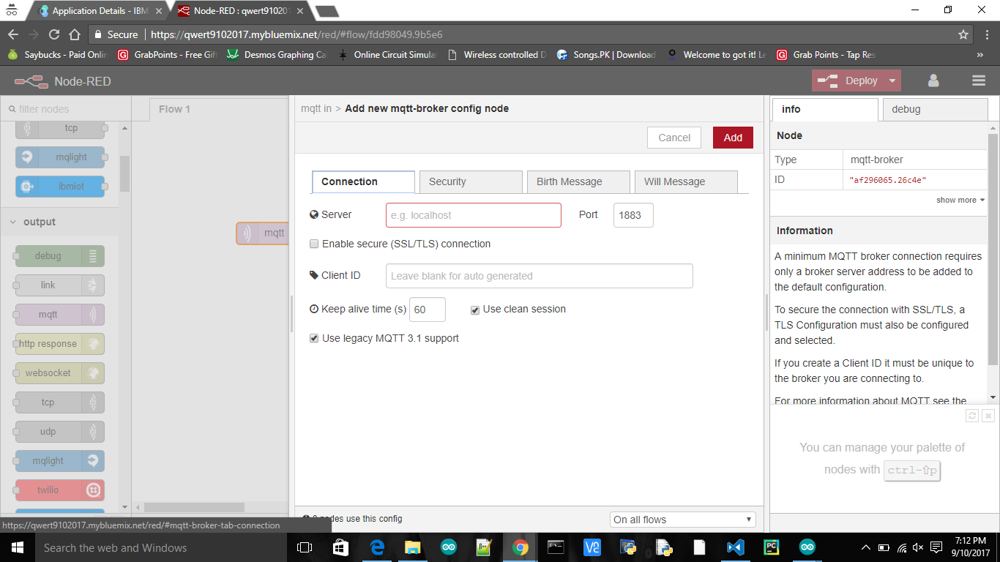
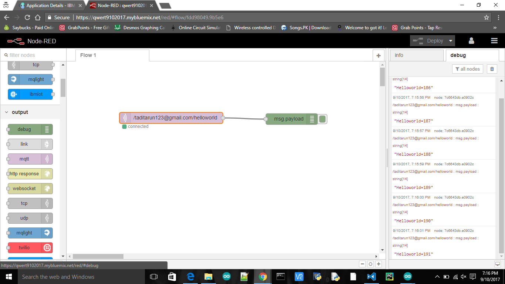

Connect ESP8266 to IBM Bluemix cloud using MQTT protocol
MQTT is a light weight message protocol widely used in IOT applications.We use MQTT to send data from ESP8266 to Bluemix.In the Bluemix we use Node-Red service.

what is ESP8266
The ESP8266 is a low-cost Wi-Fi chip with full TCP/IP stack and MCU (microcontroller unit) capability produced by Shanghai-based Chinese manufacturer, Espressif Systems. The chip first came to the attention of western makers in August 2014 with the ESP-01 module, made by a third-party manufacturer, AI-Thinker. This small module allows microcontrollers to connect to a Wi-Fi network and make simple TCP/IP connections using Hayes-style commands.

We program the ESP8266 in the Arduino IDE.Download the following libraries which are essential.
Libraries
Download the code
code
We will use MQTT Broker Dioty for this tutorial , we will discuss in the next section.Make sure of entering the valid details of ssid and MQTT credentials.
MQTT
MQTT is a machine-to-machine (M2M)/"Internet of Things" connectivity protocol. It was designed as an extremely lightweight publish/subscribe messaging transport. It is useful for connections with remote locations where a small code footprint is required and/or network bandwidth is at a premium. For example, it has been used in sensors communicating to a broker via satellite link, over occasional dial-up connections with healthcare providers, and in a range of home automation and small device scenarios. It is also ideal for mobile applications because of its small size, low power usage, minimised data packets, and efficient distribution of information to one or many receivers.It works on publish and subscribe concept.
Dioty is a MQTT broker which provides free service.Login into the Dioty and add the MQTT credentials in the above code.
Bluemix
Bluemix is a cloud platform as a service (PaaS) developed by IBM. It supports several programming languages and services as well as integrated DevOps to build, run, deploy and manage applications on the cloud. Bluemix is based on Cloud Foundry open technology and runs on SoftLayer infrastructure. Login into Bluemix and create a Node-Red starter service in the catolag.
Fill the details and start the service.After creating the service go to the dashboard and make sure that the Node Red service is running.
Visit the appliction url and then it is followed by a Node Red editor page.

Create a username and password and then login.
Connect the following node as shown.
Fill the credentials under the MQTT node. The username and the password are the parameters of the Dioty which we have logged in.
Deploy the flow and you can see data in the debug tab which is sent from the ESP8266.